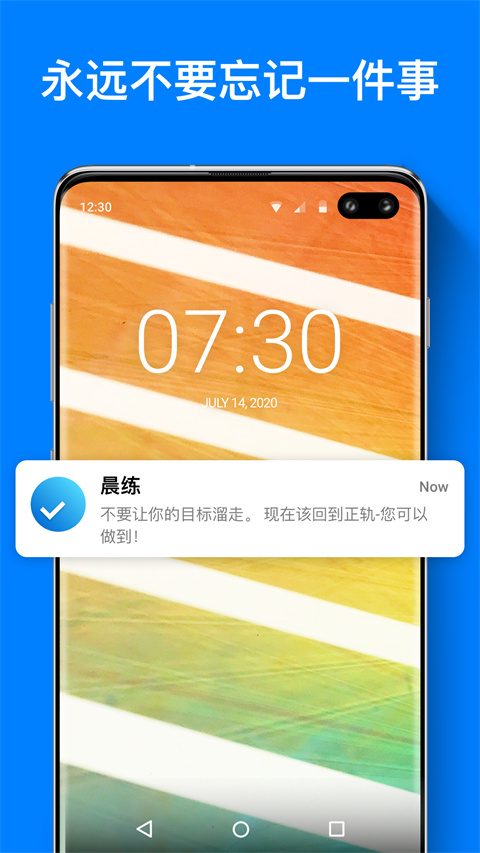

Any.Do 藏着 4 个大多数人没碰过的功能——从晨间决策到专注白噪音
你以为 Any.Do 只是个随手记待办的清单？其实它在界面底下埋了一整套帮你做决策、扛干扰、跨人协作的工具链，全找到才叫用透。
你手机里装着 Any.Do，八成也只是随手打勾、随手划掉。任务写完、到期提醒弹一下、打个勾收工——标准待办清单三件套，谁都会用。
但我翻了好一阵才发现，它真的藏着一堆没在首页摆出来的东西。有些入口埋得深，有些需要你触发某个场景才露脸，还有些是跨功能联动才出效果的。把这些挖出来之后，Any.Do 就不只是个清单了，它变成了一套帮你做决策、扛干扰、甚至拉上家人协作的工具箱。
这篇就挑四个我觉得最值得挖的，覆盖了从早上起床到晚上关手机的完整时间线。
第一个：Moment——藏在 My Day 入口旁边的晨间决策器
任何 Do 老用户都知道 My Day，每天早上自动清零的聚焦面板，把今天要做的事丢进去就开始干活。但很少有人注意，My Day 入口旁边还藏着个叫 Moment 的东西。
它不是另一个待办列表，而是一个快速过积压任务的决策通道。点进去之后，Any.Do 会把你 All Tasks 里堆积的、过期的、没分类的任务一条条摆在你面前，每条只有三个选项：留今天、推迟、归档。就三选一，没有中间态，也没有复杂的编辑界面。

这才是它聪明的地方。大多数人任务堆积的根本原因不是没时间做，而是懒得做决策——到底要不要今天做？拖到明天会不会忘了？归档的话万一以后要用呢？Moment 把这个决策过程降到了最低摩擦：滑一下就行，不用打字、不用选日期、不用选列表。
跑完 Moment 的三分钟里，你相当于完成了一次快速的任务分拣。被你留今天的那些任务，Any.Do 会自动帮你加进 My Day 的面板里。也就是说，你的晨间流程可以变成：开 Any.Do → 跑 Moment 三选一 → 进 My Day 开干。全程不超过五分钟，但今天的战场已经选好了。
谁用得上：任务积压多、每天早上打开 Any.Do 看到一长串就头大的人。谁可以无视：每天任务量稳定在个位数、从来不会堆积的人——你不需要这个决策器。
藏得真深——它不挂在首页，不在设置里，就在 My Day 入口旁边一个很不起眼的图标上。后来去Any.Do文档翻了一下才弄明白，官方的介绍其实也只提了两句话，根本没说它和 My Day 是一套组合拳。
第二个：有限离线缓存——不是完全不能用，是你没摸对边界
刚下载的 Any.Do，产品定位里写着「云端优先」，很多人看到这句话就直接以为「离线等于废了」，地铁里、地下室里、没信号的地方干脆不开它。
其实不完全是。它确实没有把完整任务库缓存到本地，但短暂断网的场景下，它能做的事比你想象的多。
具体来说：如果你平时有同步、开应用的时候网络是好的，那么进去之后突然断网（比如地铁进隧道），这时你能做三件事：查看已经加载过的列表、添加新任务、标记任务完成。这些操作都存在本地缓存里，等你回网的那一刻自动批量上传。
但反过来，如果你完全断网的时候才打开 Any.Do，那登录状态可能直接丢了，需要等联网后重新验证。另外，任何需要拉新数据的操作——切换到没加载过的列表、打开日历视图、搜索过滤——全都做不了。
这个边界得摸清楚。我之前以为离线就完全用不了，直到有次在飞机上想加个临时任务，抱着试试看的心态打开，结果不仅加成功了，还顺手把几个旧任务打了勾。落地连上网一看，全同步上去了。
哪个坑别踩：Android 用户注意——如果离线期间 Any.Do 被系统后台杀掉了，本地缓存可能跟着清掉，那你离线期间做的所有操作就白搭了。解决方法就是把 Any.Do 加进电池优化白名单，或者在开发者选项里给它开「允许后台运行」。
第三个：Private Board 私密板——协作功能里藏了个单人暗箱
Any.Do 的共享协作功能（Family 和 Workspace 模式）很多人知道，拉上家人或者同事建个空间，任务互相分配、评论、@ 人。但Private Board 这个入口，我敢说 90% 开了协作空间的人都没发现。
它藏在 Board 视图的创建选项里，创建的时候选 Private 而不是普通板，这个板就只有创建者 + 你显式邀请的成员能看到——其他空间里的人哪怕在同一个 Workspace 里，也看不到这个板的存在。

这功能乍一看好像没啥用，但场景一想就明白了：你在公司 Workspace 里，但有些事你想自己悄悄做——比如准备给团队写个改进方案、或者整理自己的待读书单——这些你不想让同事看到，又不想单独开个 Personal Plan。Private Board 就是给这种场景准备的：它挂在 Workspace 下面，但内容只有你自己（或者你邀请的极少数人）能看见。
还有个细节：Private Board 的所有视图——List、Kanban、Table、Gantt——全支持。所以你完全可以用它来做自己的个人 Kanban 板，虽然你在一个团队协作空间里。
谁用得上：在团队 Workspace 里但需要私密空间的人，或者想试试 Kanban 但不想单独开协作空间的人。谁可以无视：纯个人 Free/Premium 用户——你们没 Board 功能，自然也用不到 Private Board。
第四个：Focus Mode 白噪音——专注模式里的耳机彩蛋
Focus Mode 很多人知道，点一下进入倒计时、屏蔽通知、专注干活。但 Focus Mode 启动前那个音乐图标，你点过吗？
点进去之后是一整套环境白噪音：雨声、咖啡馆人声、森林鸟鸣、纯静态白噪音、夜间环境……选一个，戴上耳机，专注倒计时开始之后，白噪音会和倒计时一起跑。中间可以随时切歌或者关掉，音量也能调。

这个功能藏得挺有意思——它不是独立的白噪音 App，而是挂在专注模式下面。也就是说，只有当你真的想专注的时候它才出得上来。我把它当成 Any.Do 和专门白噪音 App 的结合体用：如果只是想快速专注 25 分钟，直接 Focus Mode + 白噪音，省得再开一个 App；如果想长时间听白噪音，那还是去专门的 App。
但有个硬伤得提前说：白噪音只能通过耳机播放，手机外放不出声音——这是 Any.Do 明确的设计决策，防止白噪音干扰周围人。另外 Android 用户的体验普遍比 iOS 差，部分机型会出现播放几秒就停、切后台音量骤降的问题。如果遇到了，先检查电池优化白名单，再不行就认了换耳机或者换 iOS。
最后说两句
Any.Do 的设计理念从一开始就不是做一个「功能堆砌」的待办 App。它很多功能的入口之所以不显眼，不是藏拙，是它认为大多数人大多数时候不需要。Moment 只给积压严重的人，Private Board 只给需要私密空间的协作者，白噪音只给真的想专注的人。
但如果你刚好是那少数人，把这些挖出来用透，Any.Do 给你的体验会和随便装个清单 App 完全不一样。别只用到那个最表面的打勾功能——它底下还有东西等着你翻出来。我把这些隐藏功能的完整梳理分别放在了GitHub、Gitee、GitCode 三个仓库，互相备份着以防单点失联。